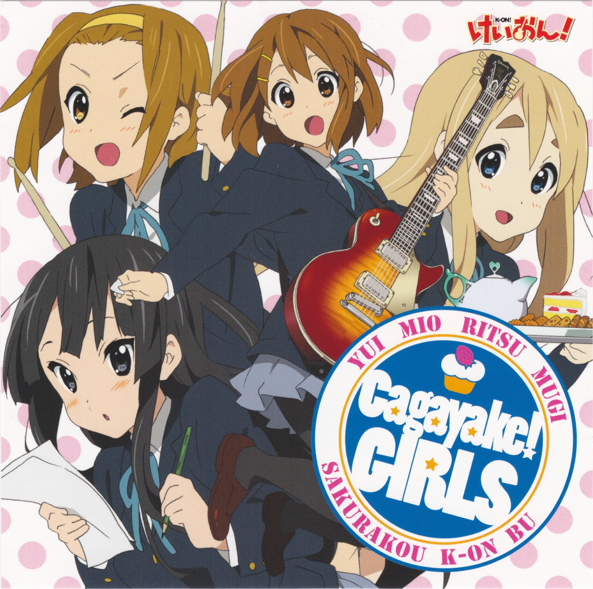

K-ON! OP Single - Cagayake! GIRLS

Tracklist
- 01. Cagayake! GIRLS
- 02. Happy!? Sorry!!
- 03. Cagayake! GIRLS (Instrumental)
- 04. Happy!? Sorry!! (Instrumental)
K-ON! ED Single - Don't say "lazy"

Tracklist
- 01. Don't say "lazy"
- 02. Sweet Bitter Beauty Song
- 03. Don't say "lazy" (Instrumental)
- 04. Sweet Bitter Beauty Song (Instrumental)
K-ON! Insert Song Single - DEATH DEVIL - Maddy Candy
Tracklist
- 01. Maddy Candy
- 02. Hell The World
- 03. Maddy Candy (Instrumental)
- 04. Hell The World (Instrumental)
K-ON! Gekichuka Mini Album - Houkago Tea Time
Tracklist
- Disc 1
- 01. Watashi no Koi wa Hotch Kiss
- 02. Fude Pen ~Ballpoint Pen~
- 03. Curry Nochi Rice
- 04. Fuwa Fuwa Time
- Disc 2
- 01. Watashi no Koi wa Hotch Kiss (#8 "Shinkan!" Mix)
- 02. Fude Pen ~Ballpoint Pen~ (#8 "Shinkan!" Mix)
- 03. Curry Nochi Rice (#12 "Shinkan!" Mix)
- 04. Fuwa Fuwa Time (#12 "Shinkan!" Mix)
K-ON! Insert Song Single - Fuwa Fuwa Time
Tracklist
- 01. Fuwa Fuwa Time
- 02. Tsubasa wo Kudasai
- 03. Fuwa Fuwa Time (Instrumental)
- 04. Tsubasa wo Kudasai (Instrumental)
- 05. Fuwa Fuwa Time (Instrumental - Guitar)
- 06. Fuwa Fuwa Time (Instrumental - Keyboard)
- 07. Fuwa Fuwa Time (Instrumental - Bass)
- 08. Fuwa Fuwa Time (Instrumental - Drums)

K-ON! Radion! Special Vol.1
Tracklist
- 01. Radion! Special Vol.1 Start!
- 02. K-ON! Introquiz
- 03. "Ra!" "Di!" "O!" "N!" Dotou no 26 Renpatsu
- 04. Radion! Otayori Corner Special
- 05. Let's Go (Yui Mio Ritsu Tsumugi Azusa Mix)
K-ON! Radion! Special Vol.2
Tracklist
- 01. Radion! Special Vol.2 Start!
- 02. Katsudou Houkoku Special!
- 03. Hisashiburi no Studio!
- 04. Ending
K-ON! Character Image Song Series - Hirasawa Yui
Tracklist
- 01. Guitar ni Kubittake
- 02. Sunday Siesta
- 03. "Let's Go" (Yui Ver.)
- 04. Guitar ni Kubittake (Instrumental)
- 05. Sunday Siesta (Instrumental)
- 06. "Let's Go" (Instrumental)
K-ON! Character Image Song Series - Akiyama Mio
Tracklist
- 01. Heart Goes Boom!!
- 02. Hello Little Girl
- 03. "Let's Go" (Mio ver.)
- 04. Heart Goes Boom!! (Instrumental)
- 05. Hello Little Girl (Instrumental)
- 06. "Let's Go" (Instrumental)
K-ON! Character Image Song Series - Tainaka Ritsu
Tracklist
- 01. Girly Storm Shissou Stick
- 02. Mokujise Happy 100%
- 03. "Let's Go" (Ritsu Ver.)
- 04. Girly Storm Shissou Stick (Instrumental)
- 05. Mokujise Happy 100% (Instrumental)
- 06. "Let's Go" (Instrumental)
K-ON! Character Image Song Series - Kotobuki Tsumugi
Tracklist
- 01. Dear My Keys ~Kenban no Mahou~
- 02. Humming Bird 3."Let's Go" (Tsumugi Ver.)
- 04. Dear My Keys ~Kenban no Mahou~ (Instrumental)
- 05. Humming Bird (Instrumental)
- 06. "Let's Go" (Instrumental)
K-ON! Character Image Song Series - Nakano Azusa
Tracklist
- 01. Jajauma Way To Go
- 02. Watashi wa Watashi no Michi wo Iku
- 03. "Let's Go" (Azusa Ver.)
- 04. Jajauma Way To Go (Instrumental)
- 05. Watashi wa Watashi no Michi wo Iku (Instrumental)
- 06. "Let's Go" (Instrumental)
K-ON! Character Image Song Series - Hirasawa Ui
Tracklist
- 01. Lovely Sister LOVE
- 02. Oui! Ai Kotoba
- 03. Lovely Sister LOVE (Instrumental)
- 04. Oui! Ai Kotoba (Instrumental)
K-ON! Character Image Song Series - Manabe Nodoka
Tracklist
- 01. Coolly Hotty Tension Hi!!
- 02. Prologue
- 03. Coolly Hotty Tension Hi!! (Instrumental)
- 04. Prologue (Instrumental)
K-ON! Sakura Kou Keionbu Official Band Yarouyo!!
Tracklist
- Disc 1
- 01. Cagayake! GIRLS (5nin Ver.)
- 02. Don't say "lazy" (5nin Ver.)
- 03. Cagayake! GIRLS (5nin Ver.) (Instrumental)
- 04. Don't say "lazy" (5nin Ver.) (Instrumental)
- 05. Curry Nochi Rice (Studio Mix) (Instrumental)
- 06. Watashi no Koi wa Hotch Kiss (Studio Mix) (Instrumental)
- 07. Fude Pen ~Ballpoint Pen~ (Studio Mix) (Instrumental)
- 08. Fuwa Fuwa Time (5nin Ver.) (Studio Mix) (Instrumental)
- 09. Subtitle Back Guitar 1
- 10. Subtitle Back Guitar 2
- 11. Subtitle Back Guitar 3
- 12. Subtitle Back Guitar 4
- 13. Subtitle Back Guitar 5
- 14. Subtitle Back Guitar 6
- 15. Subtitle Back Guitar 7
- 16. Subtitle Back Guitar 8
- 17. Subtitle Back Guitar 9
- 18. Subtitle Back Guitar 10
- 19. Subtitle Back Guitar 11
- 20. Subtitle Back Guitar 12
- 21. Subtitle Back Guitar 13
- 22. Charamela (#2 "Gakki!")
- 23. Sawako Sensei Chouzetsu Hayahajiki (#5 "Komon!")
- 24. Sawako Sensei Chouzetsu Tapping (#5 "Komon!")
- 25. Sawako Sensei CHouzetsu Ha Guitar (#5 "Komon!")
- 26. Azusa no Udemae Hirou 1 (#9 "Shinnyuu Buin!")
- 27. Azusa no Udemae Hirou 2 (#9 "Shinnyuu Buin!")
- 28. Ishuukan (#1 "Haibu!")
- 29. Tsubasa wo Kudasai (#1 "Haibu!")
- Disc 2
- 01. Cagayake! GIRLS (5nin Ver.) (Instrumental [-Guitar])
- 02. Cagayake! GIRLS (5nin Ver.) (Instrumental [-Keyboard])
- 03. Cagayake! GIRLS (5nin Ver.) (Instrumental [-Bass])
- 04. Cagayake! GIRLS (5nin Ver.) (Instrumental [-Drums])
- 05. Introduction
- 06. Guitar Introduction
- 07. Ex. 1-1: (A) A Mellow Bridge Mute
- 08. Ex. 1-2: (A) A Mellow Bridge Mute NG Take
- 09. Ex. 2-1: (B) B Mellow Arpeggio (w/ Delay)
- 10. Ex. 2-2: (B) B Mellow Arpeggio NG Take (w/ Delay)
- 11. Ex. 3-1: (B) B Mellow Counter Melody
- 12. Ex. 3-2: (B) B Mellow Counter Melody NG Take
- 13. Ex. 4-1: (B) B Mellow Shousetsume Glissando (Tremolo Picking Yuu)
- 14. Ex. 4-2: (B) B Mellow Shousetsume Glissando (Tremolo Picking Mu)
- 15. Ex. 5-1: (C) Sabi Code Backing
- 16. Ex. 5-2: (C) Sabi Code Backing NG Take
- 17. Ex. 6-1: (A-2) A Mellow 2 16 Bun Cutting (w/ Wah)
- 18. Ex. 6-2: (A-2) A Mellow 2 16 Bun Cutting
- 19. Ex. 6-3: (A-3) A Mellow 2 16 Bun Cutting NG Take
- 20. Ex. 7: (D) Kansou Gt.-I Solo
- 21. Ex. 8: (D) Kansou Gt.-II Solo
- 22. Ex. 9: Solo Ad Lib
- 23. Ex. 10: (F) Tenchou
- 24. Keyboard Introduction
- 25. Ex. 1-1: (Intro.-1) Scratch On
- 26. Ex. 1-2: (Intro.-1) Scratch On NG Take
- 27. Ex. 2-1: (C) Sabi Neiro to Rhythm
- 28. Ex. 2-2: (C) Sabi (Ue Part Neiro)
- 29. Ex. 2-3: (C) Sabi (Moto Part Neiro)
- 30. Ex. 3-1: (A) A Mellow Neiro to Glissando
- 31. Ex. 3-2: (A) A Mellow (Jou Part Neiro)
- 32. Ex. 3-3: (A) A Mellow (Moto Part Neiro)
- 33. Ex. 4-1: (D) Kansou Solo
- 34. Ex. 4-2: (C) Kensou Solo NG Take
- 35. Ex. 5-1: (E) D Mellow
- 36. Ex. 5-2: (E) D Mellow (Effect Ver.)
- 37. Ex. 6: (F) 8 Shousetsume (Bend DOwn & Hit Sound)
- 38. Ex. 7: (Ending) 5 Shousetsume ~ 8 Shousetsume Neiro
- 39. Ex. 8: (Ending) 9 Shousetsume ~ Neiro
- 40. Bass Introduction
- 41. Cagayake! GIRLS Setting
- 42. Ex. 1-1: (C) Sabi Code Arpeggio
- 43. Ex. 1-2: (C) Sabi Code Arpeggio NG Take
- 44. Ex. 2: (Intro.-2) Bass Infill
- 45. Ex. 3: Slap Renshuu
- 46. Ex. 4-1: (Intro.-2) 5~8 Shousetsume Kara (A) A Mellow Atama (tempo 170)
- 47. Ex. 4-2: (Intro.-2) 5~8 Shousetsume Kara (A) A Mellow Atama (tempo 120)
- 48. Ex. 5-1: (A) A Mellow Back Beat wo Kanjiru
- 49. Ex. 5-2: (A) A Mellow Back Beat wo Kanjiru NG Take
- 50. Ex. 6-1: (B) B Mellow Drum to no Combination
- 51. Ex. 6-2: (B) B Mellow Drum to no Combination NG Rake
- 52. Ex. 7-1: (D) Kansou Solo (tempo 170)
- 53. Ex. 7-2: (D) Kansou Solo (tempo 120)
- 54. Ex. 8: Solo Ad Lib
- 55. Ex. 9: (C-9) Shousetsume ~ Glissando
- 56. Ex. 10: (Ending) Tsuru Bass
- 57. Drum Introduction
- 58. Cagayake! GIRLS Snare & Tom Setting
- 59. Snare & Tom Ippan Teki na Setting
- 60. Ex. 1-1: (Intro.-1) ~ (C) Sabi 8 Shousetsume Fill
- 61. Ex. 1-2: (Intro.-1) ~ (C) Sabi 8 Shousetsume Fill NG Take
- 62. Ex. 2-1: (B) B Mellow 1 9 Shousetsume Fill
- 63. Ex. 2-2: (B) B Mellow 1 9 Shousetsume Fill NG Take
- 64. Ex. 3-1: (A-2) A Mellow 2 Rhythm
- 65. Ex. 3-2: (A-2) A Mellow 2 Rhythm NG Take
- 66. Ex. 4-1: (A-2) A Mellow 2 4, 9 Shousetsume Fill
- 67. Ex. 4-2: (A-2) A Mellow 2 4, 9 Shousetsume Fill NG Take
- 68. Ex. 5-1: (B) B Mellow 2 9 Shousetsume Fill
- 69. Ex. 5-2: (B) B Mellow 2 9 Shousetsume Fill NG Take
- 70. Ex. 6-1: (D) Kansou Rhythm
- 71. Ex. 6-2: (D) Kansou Rhythm NG Take
- 72. Ex. 7-1: (E) D Mellow Rhythm
- 73. Ex. 7-2: (E) D Mellow Rhythm NG Take
- 74. Ex. 8-1: (E) D Mellow 4, 8 Shousetsume Fill
- 75. Ex. 8-2: (E) D Mellow 4, 8 Shousetsume Fill NG Take
- 76. Ex. 9-1: (F) 6, 7 Shousetsume Fill
- 77. Ex. 9-2: (F) 6, 7 Shousetsume Fill NG Take
- 78. Ex. 10-1: (C-4) Sabi Rhythm
- 79. Ex. 10-2: (C-4) Sabi Rhythm NG Take
- 80. Owari.
K-ON! Sakura Kou Keionbu Official Band Yarouyo!! Part 2
Tracklist
- 01. Fuwa Fuwa Time (5nin Ver.) (Instrumental)
- 02. Fuwa Fuwa Time (5nin Ver.) (Instrumental - Guitar 1)
- 03. Fuwa Fuwa Time (5nin Ver.) (Instrumental - Guitar 2)
- 04. Fuwa Fuwa Time (5nin Ver.) (Instrumental - Keyboard)
- 05. Fuwa Fuwa Time (5nin Ver.) (Instrumental - Bass)
- 06. Fuwa Fuwa Time (5nin Ver.) (Instrumental - Drums)
- 07. Maddy Candy (Instrumental)
- 08. Maddy Candy (Instrumental - Guitar)
- 09. Hell The World (Instrumental)
- 10. Hell The World (Instrumental - Guitar)
K-ON! Original Sound Track
Tracklist
- 01. Have some tea?
- 02. Morning dew
- 03. Isoge ya Isoge!
- 04. Kawaii Inbou
- 05. 2 Hiki no Koneko
- 06. Ii Yumemite ne
- 07. Cotton candy
- 08. Virtual love
- 09. Tanpopo Takkyuubin
- 10. Ukkari-kun no Tameni
- 11. Genki!
- 12. Obaa-chan no Tansu
- 13. The other side of evening sun
- 14. Dead soldiers
- 15. Hold on your love
- 16. Falling reinforced concrete
- 17. Small flashing
- 18. Kendama-kun
- 19. Karui Joudan
- 20. Crepe wa Ikaga?
- 21. Happy languidness
- 22. Emerald green
- 23. My hometown where it snows
- 24. Ginsekai no Asa
- 25. Tea at the night of Christmas
- 26. Koneko no Ensou Kai
- 27. Patrol of stroll
- 28. Doki Doki Friday night
- 29. Ringo...Ringo...Ringo Ame
- 30. 15sai no March
- 31. Jajauma 3nin Musume
- 32. Hesitation
- 33. Pinch Daisuki!
- 34. Dress ni Crepe wa Niawa nai?
- 35. Ano Hi no Yume
- 36. Happy End
K-ON! Live Event - Let's Go! Live CD!
Tracklist
- Disc 1
- 01. ～オープニング (ライブイベント ~レッツゴー!~Ver.)
- 02. Cagayake! GIRLS (ライブイベント ~レッツゴー!~Ver.)
- 03. ～Introduction [Guitar] (ライブイベント ~レッツゴー!~Ver.「ギー太に首ったけ」演奏前)
- 04. ギー太に首ったけ (ライブイベント ~レッツゴー!~Ver.)
- 05. ～Introduction [Bass] (ライブイベント ~レッツゴー!~Ver.)
- 06. Heart Goes Boom!! (ライブイベント ~レッツゴー!~Ver.)
- 07. ～Introduction [Drums] (ライブイベント ~レッツゴー!~Ver.)
- 08. Girly Storm 疾走 Stick (ライブイベント ~レッツゴー!~Ver.)
- 09. ～Introduction [Keyboard] (ライブイベント ~レッツゴー!~Ver.)
- 10. Dear My Keys ～鍵盤の魔法～ (ライブイベント ~レッツゴー!~Ver.)
- 11. ～Introduction [Guitar] (ライブイベント ~レッツゴー!~Ver.「じゃじゃ馬Way To Go」演奏前)
- 12. じゃじゃ馬Way To Go (ライブイベント ~レッツゴー!~Ver.)
- 13. ～DEATH DEVIL登場 (ライブイベント ~レッツゴー!~Ver.)
- 14. Maddy Candy (ライブイベント ~レッツゴー!~Ver.)
- 15. Lovely Sister LOVE (ライブイベント ~レッツゴー!~Ver.)
- 16. Coolly Hotty Tension Hi!! (ライブイベント ~レッツゴー!~Ver.)
- Disc 2
- 01. ～MC「準備できた?」 (ライブイベント ~レッツゴー!~Ver.)
- 02. カレーのちライス (ライブイベント ~レッツゴー!~Ver.)
- 03. ふでペン ～ボールペン～ (ライブイベント ~レッツゴー!~Ver.)
- 04. わたしの恋はホッチキス (ライブイベント ~レッツゴー!~Ver.)
- 05. ふわふわ時間 (ライブイベント ~レッツゴー!~Ver.)
- 06. Don't say “lazy” (ライブイベント ~レッツゴー!~Ver.)
- 07. Cagayake! GIRLS (ライブイベント ~レッツゴー!~ Encore Ver.)
- 08. 『レッツゴー』 (ライブイベント ~レッツゴー!~Ver.)